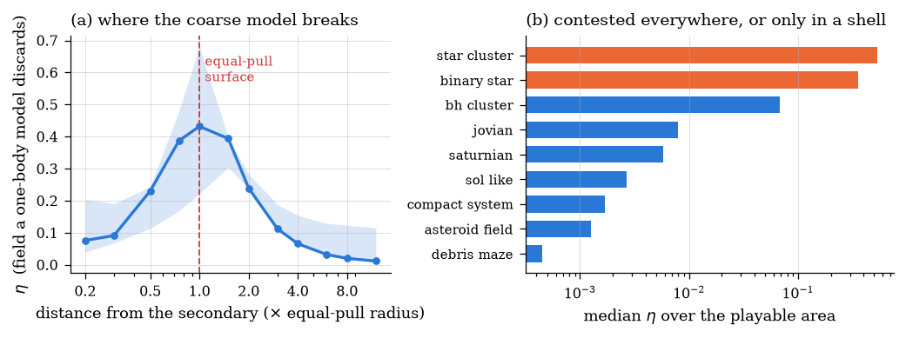
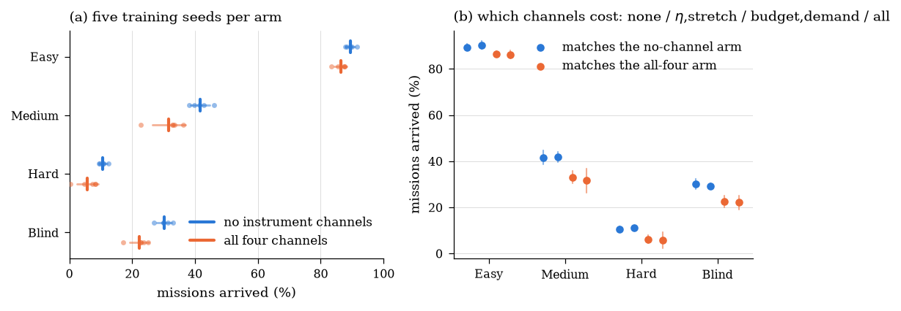
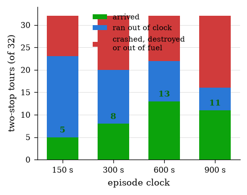

spacenav · research preprint
A spacecraft, a fuel tank, and a target that is itself orbiting. The physics is Newtonian, the simulation runs in milliseconds, and the question “is this mission hard?” still has no single answer.
A mission can be hard because a simple mental model of the field is wrong, or because the window for acting is narrow. The two need opposite fixes, so a single difficulty score merges exactly the cases a designer must tell apart.
We published a conclusion that a class of missions was infeasible. It was twelve correlated samples of a process that succeeds 16% of the time, where seeing zero has probability 0.13. The paper reports that as a finding, not a footnote.
Four hand-designed physical readouts cost the agent up to ten points of success — and the whole cost sits on the two that were algebraically redundant, not the two carrying new physics.
Every saved checkpoint of one training run flying one fixed mission sixteen times, with the policy sampling its actions rather than taking the most likely one. Early policies spray across the field; late policies thread the same line. This is what the single number in an evaluation table is averaging over.
It works. All 496 attempts on one mission clock. The fleet thins as attempts end; 298 of them arrive.
It does not. A three-target mission, 496 attempts, zero arrivals. The agent converges confidently on a shuttle between the first two targets and never reaches the third.
Learning, as an accumulation. The same mission with attempts added in training order, so the corridor forms as you watch.
The interactive version lets you switch missions, scrub the training axis and replay the fleet yourself.

We added four physically meaningful readouts to the agent’s observation — η, a fuel-versus-gravity ratio, their quotient, and a local tidal stretching rate — expecting an agent told about its own difficulty to learn faster. It learned worse. Five training seeds per row:
| What the agent was told | Easy | Medium | Hard | Blind |
|---|---|---|---|---|
| nothing | 89.4 | 41.7 | 10.7 | 30.2 |
| η and stretch (new physics) | 90.4 | 41.9 | 11.1 | 29.2 |
| budget and demand (redundant) | 86.6 | 33.2 | 6.2 | 22.7 |
| all four | 86.3 | 31.6 | 5.8 | 22.2 |
Percentage of missions arrived. The two channels carrying genuinely new information are statistically indistinguishable from telling the agent nothing at all. The two that are algebraic combinations of things it already observes are indistinguishable from telling it everything. The cost splits exactly on the redundancy line.


scripts/paper_figures.py reads stored results rather than
numbers typed into the paper source, so a claim and its figure cannot
drift apart.